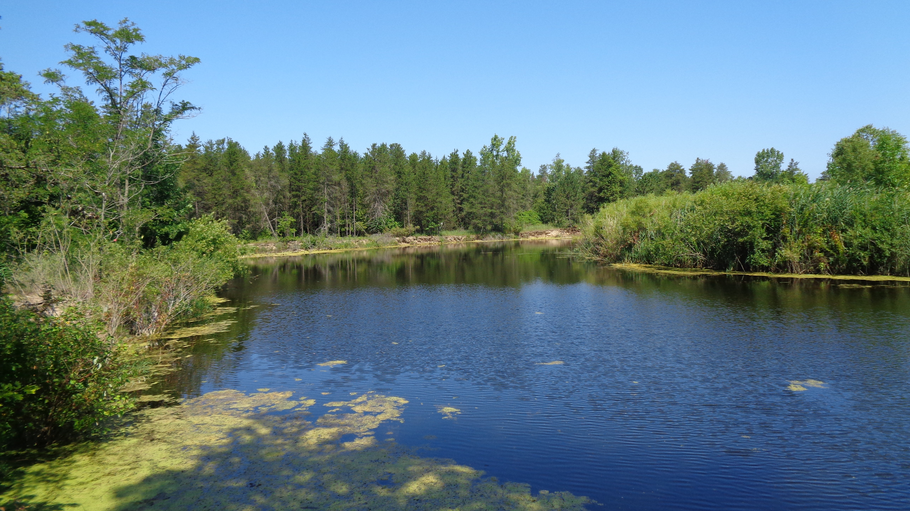
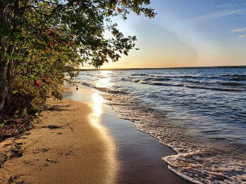

Welcome to FishFrontier!
Your go-to guide for discovering the best fishing spots. Find detailed information on locations
Why Choose FishFrontier?
- Real-time fishing spot updates
- Community sharing for anglers
- Detailed maps and fish species information
Fishing Locations in Michigan

Pinnebog_River
The Pinnebog River is a scenic waterway in Michigan, flowing through Huron County and offering opportunities for fishing, kayaking, and enjoying nature.

Brimley Bay
Brimley Bay, located in Michigan's Upper Peninsula near Lake Superior, is a picturesque spot known for its tranquil waters and natural beauty.
Boardman River
The Boardman River in northern Michigan is a vibrant trout stream, renowned for its scenic beauty and recreational opportunities like fishing, kayaking, and hiking along its banks.